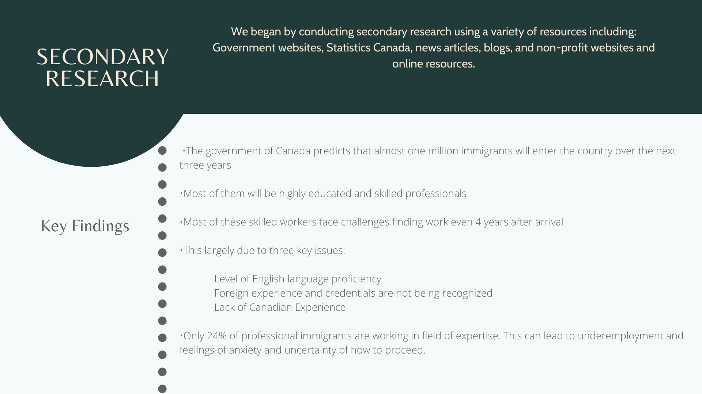
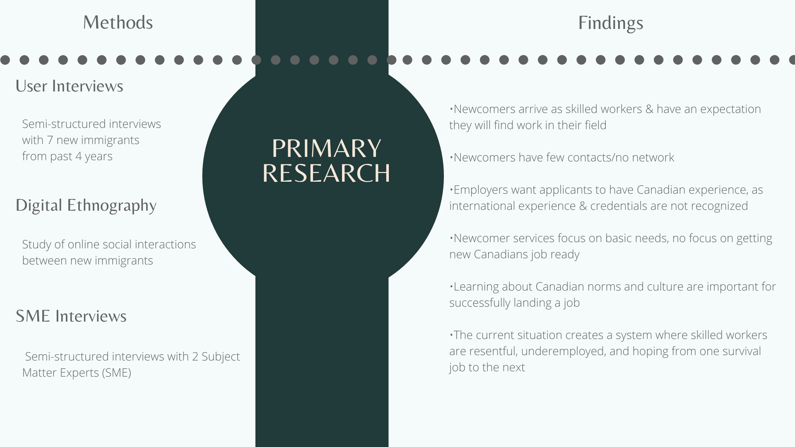
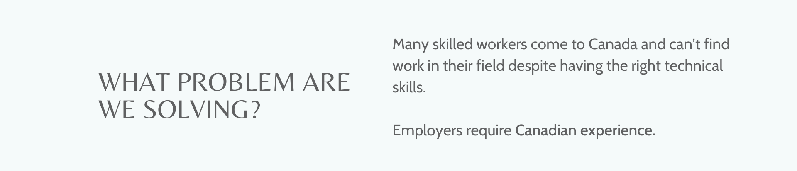

Mentor Match
Mentor Match is an online platform that helps new immigrants start a successful career in Canada by helping them gain Canadian experience and build thier professional network
Introduction
The goal of this project was to design a solution to meet the needs of the new immigrant community in Canada.
Working in a team of 4, we were challenged to consider how technology can enhance the way newcomers find success within their new communities.
Applying research, design thinking, and user-centred processes, our team spent 12 weeks designing our solution, Mentor Match, across four
phases:
• User Research & Analysis
• Requirements Analysis
• Prototypes
• Evaluation & Next Steps
User Research & Analysis
We began this project by conducting an exploratory research study to learn about the challenges faced by new immigrants to Canada.
We used our research findings to understand the problem and drive our design process.



Using our research findings, we created a persona to better understand our users, thier goals and frustrations.
Meet Tanvi Sharma.

Watch the following video to learn more about Tanvi's story.

Requirements Analysis
We used the findings from our research study to define a solution to help new immigrants like Tanvi gain Canadian experience.
 Next, our team conducted an ideation session where we came up with a series of ideas that could help an help Tanvi learn about Canadian workplace culture,
connect her with other professionals in her field and get recognized for her experience and knowledge.
We combined the ideas we generated into bigger themes, voted and prioritized ideas based on their impact in addressing Tanvi’s pain points -
and the feasibility of executing each.
Next, our team conducted an ideation session where we came up with a series of ideas that could help an help Tanvi learn about Canadian workplace culture,
connect her with other professionals in her field and get recognized for her experience and knowledge.
We combined the ideas we generated into bigger themes, voted and prioritized ideas based on their impact in addressing Tanvi’s pain points -
and the feasibility of executing each.

Mentorship came out as the winning idea. Based on our primary and secondary research, it was clear that new immigrants
had a strong need for advice and guidance throughout their journey in finding relevant work in Canada.
Prototyping

Evaluation & Next Steps
We hypothesized that there will not be a relationship between Yelp restaurant ratings and DineSafe inspection results, and this was
confirmed through our experiments. The resulting clustering models did not produce any comprehensible results. Our clusters overlapped each other,
we ran the experiment with different parameters and it was a variation of this every time.